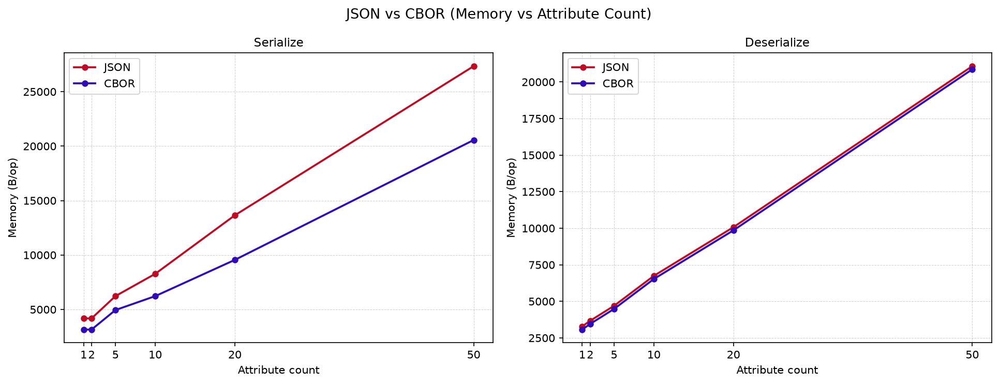
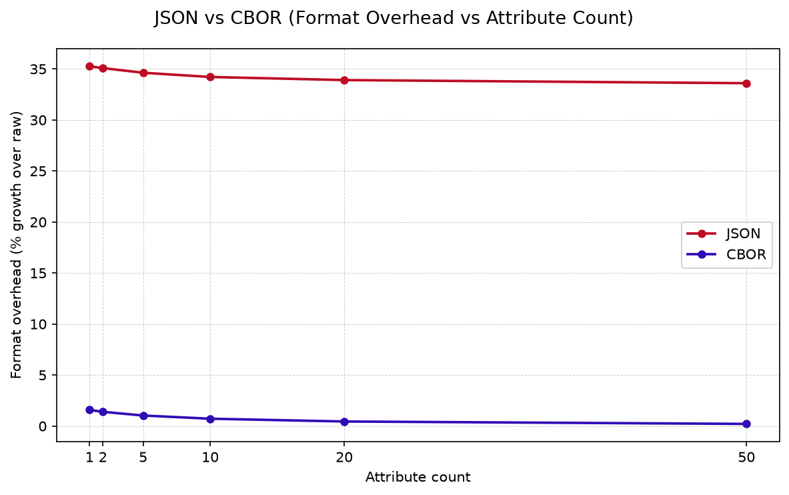
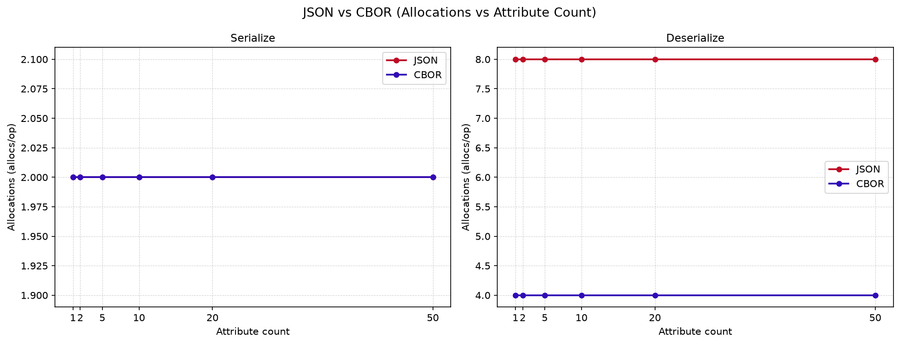

Latency vs attribute count
Lower values indicate faster serialization or deserialization. Error bars show the confidence interval.

Container-generated benchmark artifact comparing envelope serialize and deserialize latency, encoded size, format overhead, and memory cost across CP-ABE policy attribute counts, with the AES-GCM payload held at a fixed size.
The plots summarize the same measurements shown in the numerical tables. Latency is shown with confidence intervals.
Lower values indicate faster serialization or deserialization. Error bars show the confidence interval.
Bytes on the wire per message. JSON's base64 encoding of binary fields is expected to grow faster than CBOR's native byte strings.

Bytes allocated per marshal or unmarshal operation, from Go's benchmark memory profiler.

Percentage growth from raw field bytes to serialized envelope bytes. Isolates the packing cost from CP-ABE ciphertext growth.

Heap allocations per operation. A proxy for GC pressure that latency alone does not reveal.

Serialize results appear first, deserialize results below. JSON and CBOR sit side by side within each row for direct comparison.
| Attributes | Latency (ns/op) | Raw (B) | Envelope Size (B) | Format Overhead (%) | Memory (B/op) | Allocs/op | Iters (Σ8 runs) |
|---|---|---|---|---|---|---|---|
| 1 | 3153.50 ± 78.60 | 2660 | 3598 | 35.26% | 4176 | 2.0 | 14,837,419 |
| 2 | 3433.25 ± 52.96 | 3013 | 4070 | 35.08% | 4176 | 2.0 | 13,782,200 |
| 5 | 4530.88 ± 69.63 | 4072 | 5482 | 34.63% | 6224 | 2.0 | 10,485,511 |
| 10 | 7087.12 ± 122.16 | 5837 | 7834 | 34.21% | 8272 | 2.0 | 7,089,698 |
| 20 | 9957.25 ± 218.51 | 9387 | 12570 | 33.91% | 13648 | 2.0 | 4,851,116 |
| 50 | 20640.00 ± 156.06 | 20037 | 26770 | 33.60% | 27345 | 2.0 | 2,344,042 |
| Attributes | Latency (ns/op) | Raw (B) | Envelope Size (B) | Format Overhead (%) | Memory (B/op) | Allocs/op | Iters (Σ8 runs) |
|---|---|---|---|---|---|---|---|
| 1 | 602.70 ± 15.47 | 2660 | 2702 | 1.58% | 3152 | 2.0 | 75,425,789 |
| 2 | 617.17 ± 9.97 | 3013 | 3055 | 1.39% | 3152 | 2.0 | 72,259,418 |
| 5 | 829.59 ± 39.98 | 4072 | 4114 | 1.03% | 4944 | 2.0 | 55,259,172 |
| 10 | 1013.88 ± 28.85 | 5837 | 5879 | 0.72% | 6224 | 2.0 | 43,762,518 |
| 20 | 1230.00 ± 24.99 | 9387 | 9429 | 0.45% | 9552 | 2.0 | 35,595,355 |
| 50 | 2638.38 ± 44.01 | 20037 | 20079 | 0.21% | 20560 | 2.0 | 17,597,400 |
| Attributes | Latency (ns/op) | Raw (B) | Envelope Size (B) | Format Overhead (%) | Memory (B/op) | Allocs/op | Iters (Σ8 runs) |
|---|---|---|---|---|---|---|---|
| 1 | 18896.38 ± 95.44 | 2660 | 3598 | 35.26% | 3288 | 8.0 | 2,575,613 |
| 2 | 21084.38 ± 272.42 | 3013 | 4070 | 35.08% | 3672 | 8.0 | 2,301,424 |
| 5 | 28197.88 ± 319.37 | 4072 | 5482 | 34.63% | 4696 | 8.0 | 1,682,468 |
| 10 | 39344.12 ± 523.39 | 5837 | 7834 | 34.21% | 6744 | 8.0 | 1,199,426 |
| 20 | 62581.75 ± 920.23 | 9387 | 12570 | 33.91% | 10072 | 8.0 | 748,620 |
| 50 | 131164.00 ± 821.78 | 20037 | 26770 | 33.60% | 21080 | 8.0 | 345,322 |
| Attributes | Latency (ns/op) | Raw (B) | Envelope Size (B) | Format Overhead (%) | Memory (B/op) | Allocs/op | Iters (Σ8 runs) |
|---|---|---|---|---|---|---|---|
| 1 | 1141.50 ± 17.48 | 2660 | 2702 | 1.58% | 3072 | 4.0 | 39,331,236 |
| 2 | 1072.62 ± 15.56 | 3013 | 3055 | 1.39% | 3456 | 4.0 | 41,913,232 |
| 5 | 1350.00 ± 20.57 | 4072 | 4114 | 1.03% | 4480 | 4.0 | 33,476,563 |
| 10 | 1426.62 ± 16.38 | 5837 | 5879 | 0.72% | 6528 | 4.0 | 31,542,741 |
| 20 | 1661.62 ± 24.90 | 9387 | 9429 | 0.45% | 9856 | 4.0 | 27,028,067 |
| 50 | 2918.75 ± 67.86 | 20037 | 20079 | 0.21% | 20864 | 4.0 | 16,056,383 |